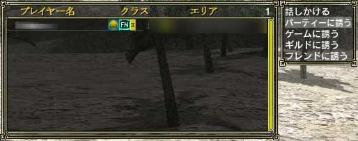
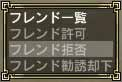

目次
>
ゲームについて
>
日本Falcom攻略
>
Sorcerian Online
>
チュートリアル
>
コミュニケーション
Sorcerian Online
|
概要
|
チュートリアル
|
|
コミュニケーション に戻る
|
フレンド
フレンドに誘う
フレンドに誘われる
フレンドリスト
フレンドに誘う
フレンドに誘うには、プレイヤー検索で誘いたいプレイヤーを検索しなければなりません。
メニュー1ページ目の「
サーチ
」から「
プレイヤーサーチ
」を選択する、もしくは「
P
」キーを押してプレイヤー検索ウィンドウを出してください。
次にTabキーを押し、「
プレイヤー名
」を選び誘いたいプレイヤーの名前を入力してください。ここで全て入力する必要はなく、頭2文字程度でも十分です。誘いたいプレイヤーを検索できたら、カーソルを合わせエンターキーを押し「
フレンドに誘う
」を選んでください。これでフレンドに誘う事ができます。
ただし、
実際にフレンド登録してくれるかどうかは相手の判断
にゆだねられます。相手がフレンド登録を承認した場合は、お互いのフレンドリストに互いの名前が登録されます。
(左：メニュー 右：プレイヤーサーチ)

(フレンドに誘う)
フレンドに誘われる
フレンドに誘われた場合、フレンドの登録を承認するかどうか決めなければなりません。
メニュー2ページ目の「
フレンドリスト
」から、「
フレンド許可
」もしくは「
フレンド拒否
」のどちらかを選んでください。
フレンドを許可した場合、自動的に互いのフレンドリストに名前が登録されるので、誘われたプレイヤーに余分な手間はかかりません。

(左：メニュー 右：フレンド勧誘の是非)
フレンドリスト
フレンドリストを見ることで、フレンド登録しているプレイヤーのクラスやそのレベル、サインインしているかどうかが確認できます。登録しているプレイヤーがプレイヤー設定で「非表示」にしている場合でも、フレンドリストには表示されます。
フレンドリストを見るには、メニュー2ページ目の「
フレンドリスト
」から「
フレンド一覧
」を選択する、もしくは「
F
」キーを押すことで表示できます。
(左：メニュー 右：フレンド一覧)
(フレンドリスト)
|
コミュニケーション に戻る
|
|
概要
|
チュートリアル
|
Sorcerian Online
|
目次へ戻る
|
ページの上部へ
|